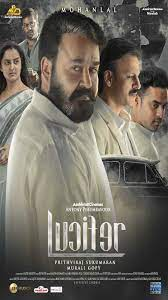

HOME
liver Twist (Indrans) wants to be tech-savvy and become a better companion to his two sons who spend more time
on their phones than with their loved ones. Oliver Twist (Indrans) wants to be tech-savvy and become a better
companion to his two sons who spend more time on their phones than with their loved ones.
Release date:19 Auguest 2021
Director: Rojin Thomas
Cast : Indrans,Sreenath Bhasi
Language : Malayalam

LUCIFER
Bored with being the Lord of Hell, the devil relocates to Los Angeles, where he opens a nightclub and forms a
connection with a homicide
Release date:10 february 2021
Director: Prithiviraj Sukumaran
Cast : Mohanlal,Manju warrier
Language : Malayalam

DRISHYAM 2
Drishyam 2 is a surprisingly satisfying sequel to a spectacular first film. Jeethu Joseph's new crime drama
is set in the same Kerala town where the events of its precursor took place. Georgekutty (Mohanlal) is now
the owner of a cinema theatre. ... He is still movie crazy
Release date:10 february 2021
Director: Jeethu Joseph
Cast : Mohanlal,Meena,Sidhique
Language : Malayalam

Cold Case is a 2021 Indian Malayalam-language crime horror supernatural thriller directed by Tanu Balak and
written by Sreenath V. ... The film marks the directorial debut of cinematographer Tanu Balak.
Release date:30 june 2021
Director: tanu Balak
Cast : Prithiviraj Sukumaran, Lakshmipriya Chandramouli
Language : Malayalam

THE PRIEST
Father Carmen, a priest, joins hands with the police to investigate a series of mysterious suicides.
However, he soon stumbles upon a disturbing fact that has serious consequences
Release date:11 March 2021
Director: Jofin T.Chacko
Cast : Mammotty,Nikhila Vimal,Manju warrier
Language : Malayalam